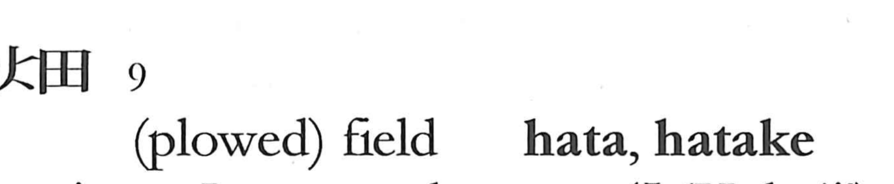

畑

Kun: hata, hatake | On:
dry field ・ upland field ・ vegetable garden
Explanation
A Japanese-coined character formed by combining the graphs for fire and rice field, evoking land made arable by burning—slash-and-burn plots known as yakihata. It designates non‑irrigated fields, dry upland ground opened by burning grass, in contrast to the flooded rice paddies written 田. It is also written 畠. This sense is preserved in compounds such as 畑地 (farmland for fields) and 畑作 (dry-field farming and the crops produced by it).